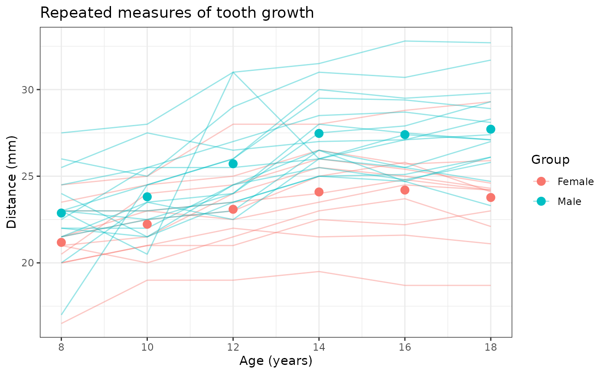
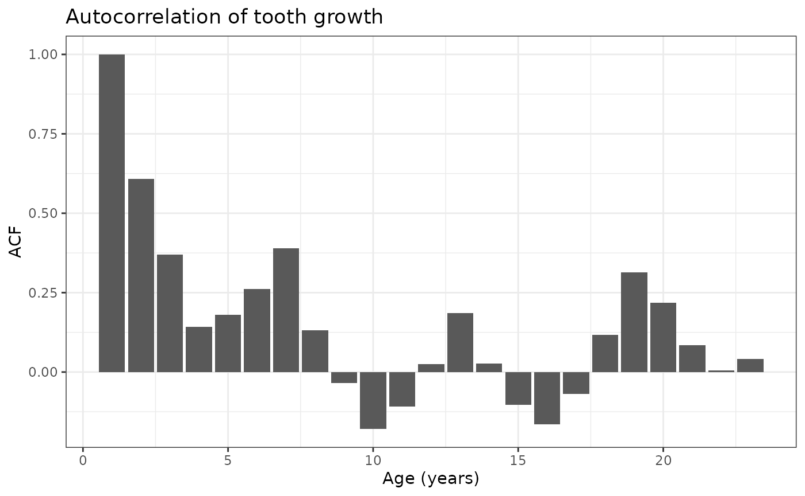

Example script
run_example.RmdLoad data
# Clear environment
rm(list = ls())
# Load relevant libraries
library(modelLong)
library(dplyr)
library(ggplot2)
# Load example longitudinal data (must be of long format)
data <- read.csv("../data/ortho.csv")[-1]
data_labelled <- data
# Rename variables
data_labelled <- data %>% dplyr::rename("Distance" = distance, "Age" = age)
data_labelled[sample(nrow(data_labelled), 5),]## Subject Sex Distance Age
## 151 M16 Male 26.1 18
## 63 M09 Male 31.0 12
## 102 F05 Female 23.5 14
## 111 M03 Male 27.9 16
## 47 F04 Female 24.5 10Data Summary
Print a summary table of the orthodontist data.
# Data summary, stratified by Sex
summary_res <- data_labelled[-1] %>%
modelLong::summary(
data = .,
group_var = "Sex",
type = list(Age ~ "continuous"))
summary_res$table1 | Variable |
Overall N = 1621 |
Sex
|
|
|---|---|---|---|
|
Female N = 661 |
Male N = 961 |
||
| Distance | 24.72 (22.50, 26.50) | 23.09 (21.50, 24.60) | 25.83 (23.50, 27.50) |
| Age | 13 (10, 16) | 13 (10, 16) | 13 (10, 16) |
| 1 Mean (Q1, Q3) | |||
Data Visualization
Plot repeated measures of adolescent tooth growth over time.
# Create plot of repeated measures
plot_res <- modelLong::plot(
data = data,
outcome = "distance",
time = "age",
id = "Subject",
group_var = "Sex")
plot_res$data_plot +
# Adjust labels and x-axis
labs(title = "Repeated measures of tooth growth") +
xlab("Age (years)") + ylab("Distance (mm)") +
scale_x_continuous(breaks = seq(8,18,2))
plot_res$acf_plot +
# Adjust labels and x-axis
labs(title = "Autocorrelation of tooth growth") + xlab("Age (years)")